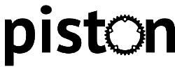

Why I like Piston, a Rust game engine
Rust is an increasingly popular programming language, and one of the things that people really like to program is games. As such, there are many available libraries for implementing game functionality. The APIs come in many flavors. I have tried many over the last couple years, but Piston, which was one of the first I came across, remains my favorite.
linkWhat is a Game Engine?
There are a few features of a library or framework that I would say define it as a game engine. In reality, no library fully implements a full game engine, nor could it. The engine of a game is specific to the game. Different games require different functionality, and each game has its own high-level abstractions that the developer generally builds. A game engine library is something upon which these abstractions are built.
In my opinion, for a library to be called a "game engine", it requires an API for doing at least two things:
linkRendering Abstractions
Abstractions for rendering are critical to making a programmer's life easier when writing graphics code. Without it, they would be relegated to raw graphics API calls, which, if you have ever tried writing, say, OpenGL, is extremely cumbersome.
The most obvious features of a rendering abstraction include API for managing windows, textures, meshes, materials, and the whole graphics pipeline. A library gets bonus points for abstracting text rendering, cameras, scenes, or triangulation.
linkInput Abstractions
Most input abstractions are tied to the window being used, but not all. For most games, keyboard and mouse input, the two main types of ways we interact with computer games, are only collected when the window has focus. The are generally collected from an event loop, which may or may not be exposed to the library user. Touch-screen input, if available, can also be included here.
Other input devices, like gamepads or microphones, are usually handled more globally, and abstractions for them can often be relegated to libraries outside the engine.
linkBonus Features
Some game engines provide additional abstractions for other systems. The most common is an audio playback API. Others include game-specific abstractions for the filesystem, timers, and networking.
linkThe Rust Game Engine Landscape
After only five years of stability, Rust has many game engine crates. A good list of them can be found in the Awesome Rust repository, and many more related crates can be found at Are we game yet?.
I'd like to talk briefly about the ones that I have tried or at least looked into.
linkSFML
The SFML crate provides Rust bindings for the Simple Fast Media Library. I came to Rust having developed primarily in C++ previously. As an freshman computer engineering major, SFML lived up to the "simple* in its name. I still think it is a decent library if you are using C++. The Rust bindings have about 95% parity with the original implementation, with only a few API differences.
The problem with this, is that an API that works well in C++ does not necessarily work well in Rust. The SFML crate is, unfortunately, a good example of this. The primary pain point is lifetime parameters on types that would not have them had the API been designed in Rust. In addition, the need to include SFML .dll files with your executable seems cumbersome when most crates build this kind of thing dynamically and never concern the user.
linkggez
ggez was one of the first Rust game engines to emerge. A lot of people like it, but I have two major gripes with its API design.
The first is that handling events is done through implementing a trait. Types that implement this trait are passed to a run function which runs the event loop and calls the trait's update and draw methods as needed. This is perfectly fine as long as your feature needs lie entirely within what the API provides. However, once you want some finer lever of control over the way your game runs, you have no way to get it. This makes ggez okay for prototyping but poor for more complex designs.
My second grievance is the way the API does function calls. Context, one of the main types in the library, has only one public method. All operations on it are done with various separate functions. For example, if you want to change the fullscreen mode of the window, you do not call a method of Context or even of some inner window. Instead, you call graphics::set_fullscreen(&mut context, FullscreenType::Windowed). Every operation you want to do using the Context, from drawing to getting user input, is done via regular functions in various modules of the crate being called with the context as an argument. In my opinion, this C-style API design has no place in any language that has method syntax.
linkAmethyst and Bevy
Amethyst and Bevy are two Entity-Component-System-based game engines which are currently both in development. They are both reasonably designed, although Bevy is quite a bit simpler without sacrificing power. ECS-based engines can be very useful if your use case is suited to them. The ideal game to use an ECS to implement is one with lots of different pieces that can be easily decoupled, of which many have shared behavior. Amethyst and Bevy are both well-suited for this, but I have found that many of the kinds of games that I have tried to make cannot be easily made to fit this model.
linkquicksilver
quicksilver is a very cool idea. Write your game once, and it can be compiled into both a native executable as well as a WebAssembly module that works in the browser. It also has a manually-managed event loop, which I like. Honestly, I don't have much bad to say about it. The API is very straightforward, but I have not used it enough to know of any shortcomings if they exist.
The only thing I might say is that, depending on what you want to do with your game, the ability to run it in a web browser may be useless. If you want to make a free game just for people to have fun with, then being able to run it in the browser is very neat. However, if you want to sell your game, you probably have no need for this, as you will likely simply distribute the executable to people who pay for it either through your own website or though a service like Steam.
There are several more, but those are the ones that I have used other than the topic of this post. This brings us to...
linkPiston

Piston had greater popularity closer to when it was first released, but in the last year, many people have taken more interest in the ECS-based engines. However, I still think that Piston is very well designed and has its place in the Rust gamedev landscape. So, what is so great about it?
linkModularity
Piston bills itself as "A modular game engine written in Rust". While the ECS-based engines have modularity in spades, Piston's modularity feels much more "rusty". Engine behavior is defined by a large number of traits, each of which defines some different aspect of mid-to-high-level game engine functionality. These traits make up a front-end that lets your define your game behavior. Arbitrary back-ends can then be used to actually run your game. The PistonDevelopers GitHub organization contains a number of backend implementations as well as many other utility libraries for various game operations.
My favorite trait is the Graphics trait from piston2d-graphics. It defines an arbitrary render-target interface. 2D graphics code written in your Piston applications can be made to target arbitrary graphics backends. For example, I made the crate graphics_buffer, which is a Graphics implementation with a in-memory buffer as a backend. This allows the user to use the same code to both draw your game and take screenshots.
The Window and AdvancedWindow traits define generic window functionality. BuildFromWindowSettings lets you build different kinds of windows with the same settings. The CharacterCache trait abstracts a cache of textures rendered from fonts at various sizes.
There are so many more contained in the various Piston modular crates. In my opinion, this straightforward trait-based design makes the most of Rust's powerful type system.
linkFlexibility
I think that a good game engine should make certain common patterns easy to express without preventing the user from digging down to the lower levels of the implementation to fine-tune things.
piston_window, Piston's all-in-one backend implementation, allows full access to the underlying window abstraction as well the the rendering device, encoder, and a resource factory. If you really want to, you can make raw OpenGL calls to implement custom pipelines.
Because the event loop is managed by the user, you have complete control over the execution. This level of micro-management is not for everyone, but I like it. If you want to make your logic simple, you can simply throw game update logic into the event loop, and it will happen in sequence with rendering. Alternatively, you can separate your update loop into another thread so that any physics systems in your game are not tied to the framerate. Which one of these you pick depends on how your game works and how it responds to putting state behind locks on in channels.
linkVector Graphics
This is a small thing for most people, but being able to very easily draw arbitrary 2D primitives is very important to me. I am not a very good artist, so rather than making textures and sprites, I like to draw polygons and animate them with math.
Most APIs require you to build some kind of struct describing the polygon and then use a draw method or function. ECS-based engines force this data to be persistent, which is annoying when you have to write systems to keep it updated.
I prefer to actually store only as much data as is necessary to derive the shape. For example, if I need to draw a circle, I do not store the position of all its vertices. Instead, I store the position of its center and its radius. This can be used to calculate the vertices on the fly. While it's slightly less efficient, the functional style makes the code easier to reason about.
For example, the piston2d-graphics function for drawing a polygon can be called this simply:
1linkpolygon(color, &vertices, transform, graphics);
This model allows primitive data to be stored persistently only if you really want/need to.
linkBatteries Not Included
Piston's biggest fault is its lack of certain nicer features. Many things need to be handled or implemented by the user. These include:
- A built-in geometric vector type. This need prompted me to make the
vector2mathcrate. - Complex text formatting. I made the
fit_textcrate to add some of this functionality. - Audio playback. There is a repo or two in the PistonDevelopers organization to handle this, but I just use
rodio, which is an excellent audio crate.
Whether these missing features matter to you depends on what you look for in a game engine. I don't mind writing a little extra code, so they don't bother me much.
linkConclusion
If what I've described sounds good to you, then consider trying Piston out. It's modular, it's flexible, and there is very little you can't do with it if you are willing to implement a few of your own solutions.
I'd like to thank Sven Nilsen (bvssvni), creator and primary contributor to Piston. While development has slowed a bit, he still readily accepts pull-request from other contributors.
To learn more, you should check out the Piston website or get started immediately with the piston_window docs.